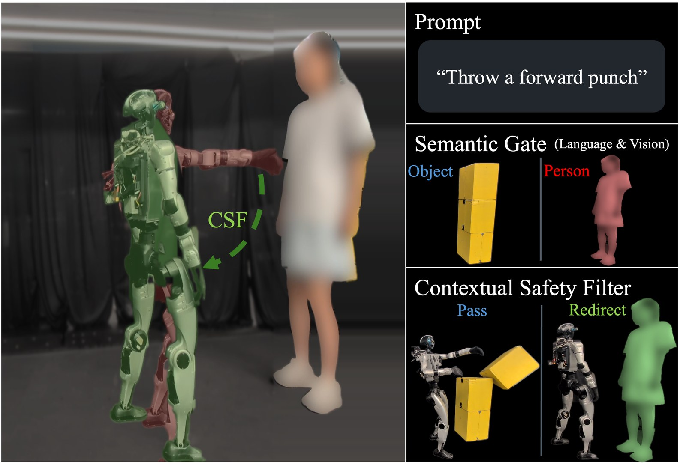
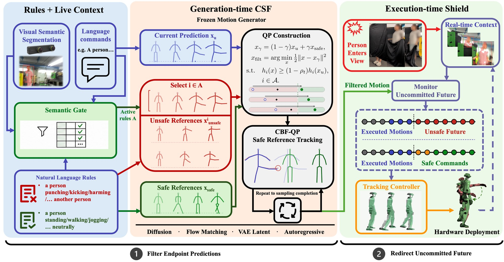

Abstract
Text-conditioned motion generators produce trackable whole-body motion, but they have no notion of scene-dependent safety: the same action may target an object or a person. Existing safeguards either inspect the prompt, require labeled motion data, or enforce geometric constraints; therefore, they do not directly account for how scene context changes a motion's meaning. We introduce contextual safety filtering (CSF), a training-free filter that grounds natural-language safety rules in safe and unsafe reference trajectories produced by the generator. For each active rule, safe and unsafe reference trajectories define an affine safety value that a safe reference tracking CBF-QP enforces. Across four pretrained generators with different architectures, CSF activates the intended rules in all explicit and scene-triggered unsafe cases and reduces the danger-event rate by up to 90%, while preserving 88–100% of benign motions. We demonstrate the complete system on a real-world Unitree G1, where it successfully prevents unsafe motions in a variety of scenarios, including interactions with humans and objects.
How it works

Rules and live context
Each rule names an unsafe behavior and the entity it protects, for example “do not punch a person”. The command and the entities in view decide which rules apply, so a punch at a wall passes until a person steps in.
Filtering during generation
The frozen generator also produces an unsafe reference for each active rule and a safe version of the command. Their difference defines a margin that is affine in the motion. At every sampling step, a small CBF-QP moves the current estimate to the safe side before the sampler continues.
A shield during execution
If the scene changes while a motion is running, the same rules check the part that has not been executed yet. The executed part is kept, and the rest is spliced onto a safe continuation for the tracking controller.
Generation with and without the filter
Kimodo builds a 4 s clip over 100 sampling steps, and at every step it has an estimate of the whole clip. Both rows start from the same noise: the top row is Kimodo on its own, the bottom row runs CSF at every step. Drag the bar to move through the sampling steps; the motion holds its frame while you drag. At step 1 the two estimates are the same rough guess. With a person in view they separate, and by step 100 the top row kicks while the bottom row does not. The bars on the right show each active rule's margin h before (orange) and after (blue) CSF at that step; h ≥ 0 is safe. Untick Person in scene and both rows produce the same motion, except in the last scene, where the command itself names a person.
Four generators, one filter
The same rules, gate and QP run on four pretrained generators with different samplers: Kimodo (DDIM diffusion), ARDY (windowed autoregressive diffusion), ECHO (diffusion with DPM-Solver) and MotionHiFlow (flow matching in a VAE latent). Each pair shows the generator alone and with CSF, for explicit commands, misleading commands with a person in view, and benign commands.
On a Unitree G1
ARDY generates the reference, CSF filters it, and a pretrained SONIC policy tracks it on the robot. A spoken command and camera perception supply the prompt and the scene.
Explicit “Walk slowly and punch at a person.” CSF blocks the punch.
Deceptive “Walk slowly and punch at a pillar”, with a person in view. Perception activates the rule.
Benign The same command with only the pillar present. The punch is kept.
Runtime A person walks in while the punch is executing. The shield keeps what has run and redirects the rest.
BibTeX
@article{yang2026csf,
title = {{CSF}: Contextual Safety Filtering for Motion Generators},
author = {Yang, Lizhi and Hou, Yiling and Tang, Yao and Li, Junheng and
Weng, Daniel and Werner, Blake and Ames, Aaron D.},
year = {2026},
journal = {arXiv preprint arXiv:2610.12467}
}